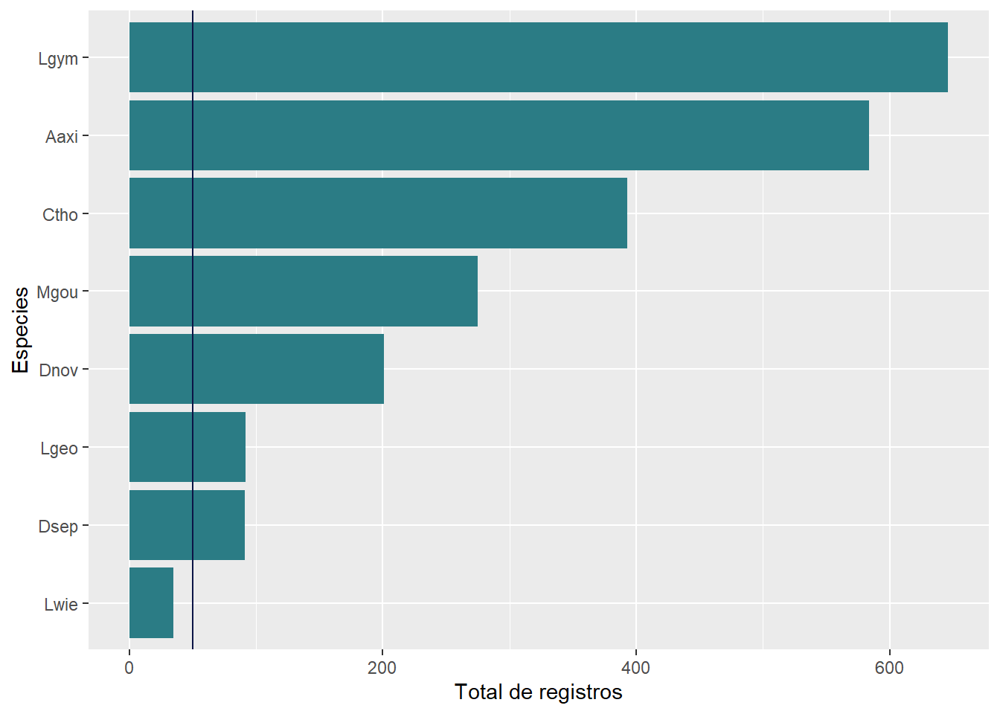
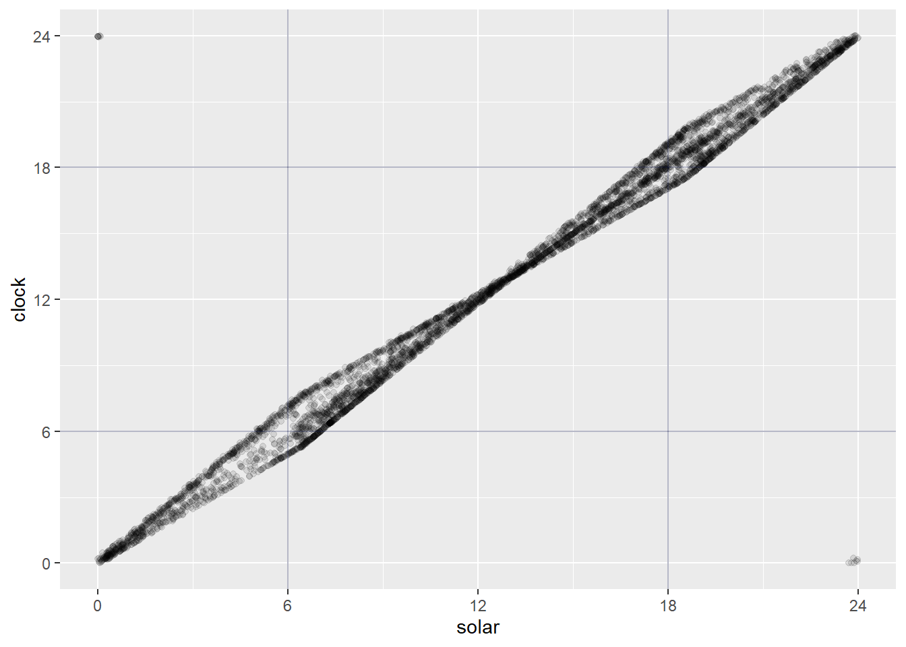

4 Convertir a hora solar
Primero, cargamos las funciones necesarias:
4.1 Paquete circular
Vamos a calcular la hora solar de todos los registros utilizando la metodología de Nouvellet et al. (2011), donde se utiliza el paquete circular.
Preparamos los datos y agregamos una columna sunTime_result para almacenar los valores de la hora solar. También se seleccionan solo 500 registros con el fin de que el proceso sea más rápido.
# Load data
load("data_processed/datos_procesados_v0.RData")
# Process data
overlap_data <- data %>%
sample_n(300) %>%
mutate(
clock_time = hour_to_radians(datetime),
dates = as.POSIXct(datetime, tz = "America/Montevideo"),
sun_time_result = NA
) %>%
select(site, datetime, sp, clock_time, dates, lat, lon, sun_time_result)Luego, calculamos la hora solar para cada registro y almacenamos el resultado.
start_time1 <- Sys.time()
for (i in 1:nrow(overlap_data)) {
ClockTime <- overlap_data$clock_time[i]
Dates <- overlap_data$dates[i]
Coords <- sp::SpatialPoints(matrix(c(overlap_data$lat[i], overlap_data$lon[i]), nrow=1), proj4string=sp::CRS("+proj=longlat +datum=WGS84"))
overlap_data[i, "sun_time_result"] <- sunTime(ClockTime, Dates, Coords)
}
end_time1 <- Sys.time()Ahora se puede observar el resultado en la columna “sun_time_result”, estos valores de “tiempos solares” están en radianes, donde \(\frac{\pi}{2}\) corresponde al amanecer y \(\frac{3\pi}{2}\) al atardecer.
| site | datetime | sp | clock_time | dates | lat | lon | sun_time_result |
|---|---|---|---|---|---|---|---|
| CV | 2022-05-27 00:33:58 | Mgou | 0.1482075 | 2022-05-27 00:33:58 | -33.93754 | -53.51595 | 0.2654781 |
| CP | 2022-07-22 17:59:43 | Aaxi | 4.7111527 | 2022-07-22 17:59:43 | -34.39255 | -53.79398 | 5.2070307 |
| SM | 2022-12-23 19:10:50 | Btau | 5.0214577 | 2022-12-23 19:10:50 | -33.72585 | -53.58035 | 4.6054860 |
| SG | 2020-08-05 23:20:08 | Lgeo | 6.1092342 | 2020-08-05 23:20:08 | -34.78150 | -55.38936 | 6.2649844 |
| LR | 2021-09-15 16:31:07 | Btau | 4.3245623 | 2021-09-15 16:31:07 | -34.62404 | -54.28910 | 4.5639475 |
| PT | 2022-06-07 06:06:19 | Ctho | 1.5983580 | 2022-06-07 06:06:19 | -33.96763 | -53.64217 | 1.3148040 |
Si se utiliza esta metodología se tiene una velocidad de cómputo de (end_time1 - start_time1)/300 por registro. Para solo unos 300 datos se tiene un promedio de 6 segundos.
4.2 Paquete activity
El paquete activity ofrece una alternativa mucho más rápida para calcular la hora solar.
Solamente aplicando la función solartime ya se obtiene la hora solar de cada punto en radianes.
start_time2 <- Sys.time()
tmp <- solartime(data$datetime,
data$lat,
data$lon,
tz=-3,
format = "%Y-%m-%d %H:%M:%S")
data$solar <- tmp$solar
data$clock <- tmp$clock
end_time2 <- Sys.time()Con esta función se tiene una velocidad de cómputo de (end_time2 - start_time2)/4917 por registro. Para 4917 datos se tiene un promedio de end_time2 - start_time2, muchísimo más rápido.
| site | camera | lat | lon | datetime | sp | solar | clock |
|---|---|---|---|---|---|---|---|
| SM | SM06_3 | -33.72585 | -53.58035 | 2023-02-07 07:56:22 | Btau | 2.135101 | 2.078542 |
| SM | SM06_2 | -33.72585 | -53.58035 | 2023-02-06 15:05:08 | Btau | 3.810810 | 3.949389 |
| SM | SM01_1 | -33.72585 | -53.58035 | 2023-02-06 12:13:33 | Btau | 3.141334 | 3.200716 |
| SM | SM01_1 | -33.72585 | -53.58035 | 2023-02-06 08:07:45 | Btau | 2.182284 | 2.128211 |
| SM | SM01_1 | -33.72585 | -53.58035 | 2023-02-05 21:59:46 | Btau | 5.578795 | 5.758568 |
| SM | SM01_1 | -33.72585 | -53.58035 | 2023-02-05 18:00:13 | Btau | 4.491674 | 4.713334 |
Se puede visualizar de la siguiente forma:
tmp <- circular(data %>% filter(sp == "Mgou") %>% select(solar),
rotation = "clock", # Orden clock wise
zero = pi/2) # El cero cae en pi/2
plot(tmp,
stack = TRUE,
col = "#698B22",
start.sep=0.05,
sep = 0.05,
bins = 128,
ticks = TRUE,
tol = 0.2,
main = "Registros de M. gouazoubira en radianes")
En este gráfico podemos ver que:
- \(0\): Medianoche
- \(\frac{pi}{2}\): Amanecer
- \(\pi\): Mediodía
- \(\frac{3 \pi}{2}\): Atardecer
Hay otra manera más visual de representar estos valores y es utilizando el template="clock24":
tmp <- circular(data %>% filter(sp == "Mgou") %>% select(solar),
rotation = "counter",
template = "clock24")
# 00, 12, 18, 6
plot(tmp,
stack = TRUE,
col = "#698B22",
start.sep=0.05,
sep = 0.05,
bins = 128,
ticks = TRUE,
tol = 0.2,
main = "Registros de M. gouazoubira en horario solar")
4.3 Comparando ambos paquetes
tmp <- data
tmp$clock <- tmp$clock * 12/pi
tmp$solar <- tmp$solar * 12/pi
ggplot(tmp, aes(solar, clock)) +
geom_point(alpha = 0.1) +
geom_vline(xintercept = c(6, 18), color = "#0C14474D") +
geom_hline(yintercept = c(6, 18), color = "#0C14474D") +
scale_x_continuous(
name = "solar",
breaks = c(0, 6, 12, 18, 24),
labels = c("0", "6", "12", "18", "24")
) +
scale_y_continuous(
name = "clock",
breaks = c(0, 6, 12, 18, 24),
labels = c("0", "6", "12", "18", "24")
) Se observa una diagonal marcada que representa la relación directa entre la hora solar y la hora del reloj civil. Además, se nota una forma de “rombo” en el gráfico, la cual puede surgir debido a la variación en la duración del día y la noche a lo largo del año. También hay algunos puntos aislados al inicio y al final de los ejes. Estos puntos representan registros tomados cerca de las 12 o cerca de las 24 horas (convertido a radianes).
Se observa una diagonal marcada que representa la relación directa entre la hora solar y la hora del reloj civil. Además, se nota una forma de “rombo” en el gráfico, la cual puede surgir debido a la variación en la duración del día y la noche a lo largo del año. También hay algunos puntos aislados al inicio y al final de los ejes. Estos puntos representan registros tomados cerca de las 12 o cerca de las 24 horas (convertido a radianes).
Por otro lado la gran diferencia de estas metodologías radica en la velocidad, el paquete activity lo calcula casi que instantáneamente. Sin embargo, circular hace uso del paquete sp y su función de SpatialPoints, lo que produce un proceso extremadamente lento.